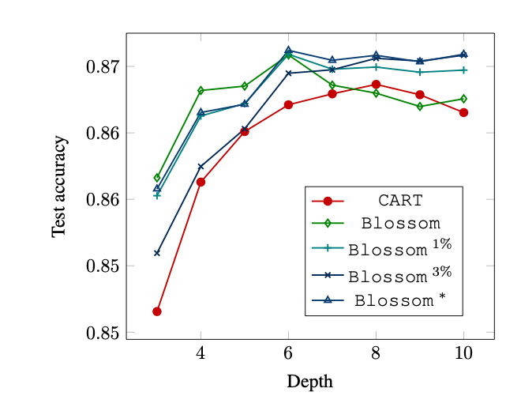
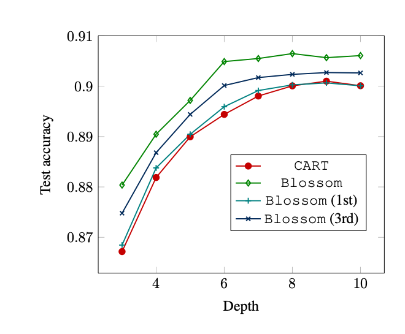
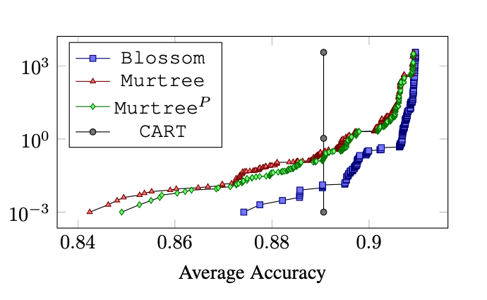
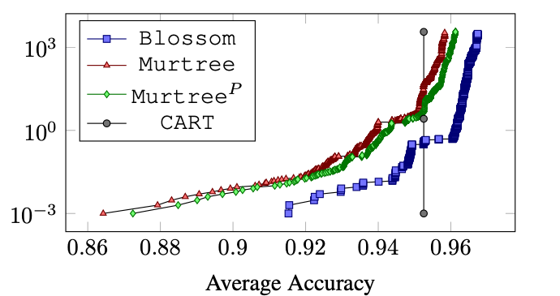

- 最初の木は CART 並み深さ 10 で、最初に返す木の平均誤分類数は 407（CART は 412）。1 分後には 374 まで減った（58 データの平均）。
- 深い木で MurTree より高精度1 時間以内に最適性を証明できなかったデータで、訓練精度は MurTree より平均 1.6 ポイント（深さ 7）、1.1 ポイント（深さ 10）高かった。
- メモリは入力の大きさ程度キャッシュを持たないので、最悪の場合の空間計算量は \(\Theta(2^k m)\)。\(2^k \le n\) なら入力の大きさを超えない。
動的計画法は大きなデータでも最適な木を求められるが、途中で止めると使える木が手元にない
Hyafil と Rivest が精度最大の決定木を求める問題を NP 困難と示して以来、実際に使われてきたのは CART や C4.5 などの貪欲法である。論文が扱うのは、深さの上限 \(k\) のもとで訓練データの誤分類数を最小にする問題で、特徴量は二値である。SAT や整数計画法の定式化は変数の数がデータ点の数と木の大きさに比例し、数千件を超えるデータには広げにくい。一方、DL8、DL8.5 などの動的計画法は、ある特徴量で分けたあとの左右の部分木を独立に最適化できることを使い、大きなデータにも広がる。
\(N\) と \(P\) は負例と正例の集合、\(N(f)\) は特徴量 \(f\) を満たす負例である。ただし DL8.5 はメモリを多く使い、途中で止めたときに木を返せない（anytime でない）。MurTree と LDS-DL8.5 は途中で返せる性質を改善した。論文は、深い木では Blossom がこれらを大きく上回りうると述べる（ただし LDS-DL8.5 とは実験で比べていない）。
動的計画法は最初の再帰呼び出しを終えるまで完全な木を 1 本も作れない
特徴量の数を \(m\)、データ点の数を \(n\) とすると、上の再帰の計算量は \(\Theta((n + 2^k) P(m, k)) \subset O((n + 2^k) m^k)\) である（\(P(m, k) = m!/(m-k)!\)）。問題は探索の順番にある。左の部分木を最適にし終えるまで右の部分木を探索しないので、最初の完全な木が見つかるのは最初の再帰呼び出しが終わったとき、つまり \(\Theta((n + 2^k) P(m-1, k-1))\) 時間後になる。深い木ではこれが現実的な時間に収まらない。DL8.5 や MurTree は同じ部分問題を使い回すキャッシュも持つが、論文の実験ではキャッシュの参照にかかる負担が見合わない場合もあった。
Blossom は未展開の枝（つぼみ）を先に伸ばして木を完成させ、そのあとで枝ごとに別の特徴量を試す
深さが \(k\) 未満で誤分類が残る枝を「つぼみ（bud）」と呼ぶ。Blossom（アルゴリズム 2）は動的計画法と同じ探索空間を、同じ枝を 2 度探索せずにたどる。違うのは順番で、つぼみが残っている間はそれを展開し、つぼみがなくなって木が完成したら、最後に決めた枝に戻って最良の誤分類数を更新し、まだ試していない特徴量があればその枝をつぼみに戻す。論文の図 1（深さ 2、特徴量 3 つ）では、動的計画法が 3 番目に調べる枝 \((a, c)\) を Blossom は 7 番目に調べ、最初の完全な木は Blossom では 4 番目の葉、動的計画法では 6 番目の葉で得られる。
定理 3.1 により、Blossom の最悪の場合の時間計算量は動的計画法と同じ \(\Theta((n + 2^k) P(m, k))\) で、空間計算量は \(\Theta(2^k m)\) である（現在の木の枝は高々 \(2^k\) 本で、それぞれが試した特徴量を覚える）。最初の木は \(\Theta(2^k + nk) = \Theta(nk)\) の線形時間で得られる。
特徴量の順序、兄弟の部分木による下界、前処理の 3 つで、良い木を早く見つけて探索を絞る
- 特徴量の順序：各枝で、ジニ不純度が小さい特徴量から試す（誤分類数とエントロピーも試し、ジニ不純度が最も良かった）。深さ \(k-1\) の枝では誤分類数が最小の特徴量が最適なので、それだけを使い、ほかの特徴量は試さない。最初に完成する木は深さ \(k\) で止めた CART の木とほぼ同じになる。
- 下界：枝 \(b\) の祖先 \(b'\) について、\(b'\) から \(b\) までの間ですでに最適になった兄弟の部分木の誤分類数を足すと、\(b\) を含む木の下界 \(lb(b', b)\) になる。これが \(b'\) の現在の最良値 \(best(b')\) 以上なら、\(b\) をそれ以上伸ばしても改善しないので打ち切る。どのつぼみから伸ばすかは、先に入れたものから順（FIFO）が最も良かった。
- 前処理：同じ特徴量を持つデータ点をまとめ、ラベルが矛盾する組（同じ特徴量で正例と負例）を取り除く。誤分類数が正の木の最適性を示すには探索空間を調べ尽くす必要があるが、矛盾を除けば、誤りのない木が見つかった時点で止められる。どのデータ点でも値が同じか逆になる冗長な特徴量も除く。one-hot 符号化した公開データには冗長な特徴量が多い。
浅い木では Blossom の木のほうが CART よりテスト精度が高く、深い木では刈り込みを加えると上回った
実験は先行研究の 50 データと、Kaggle と UCI の大きなデータ 8 つの計 58 データで行った。時間の上限は 1 時間、メモリの上限は 50 GB である。テスト精度の実験では、データごとに 20% を検証用に取り分ける無作為抽出を 50 回繰り返し、Blossom は各回 10 分で止めて最後の木を使った。
- 深さ 6 以下では Blossom のほうがテスト精度が高かった。差が統計的に有意なのは深さ 3（信頼度 99.9%）と 4（95%）で、深さ 5 と 6 の信頼度は 50% と 60% にとどまった。もっと深い木では有意な差はなく、CART のほうがわずかに良くさえ見えた。
- 論文はこれを過学習と考え、Blossom の木をコスト複雑度の刈り込みで訓練精度が 1% または 3% 下がるまで刈った。刈り込んだ木は、深さが増えても CART より精度が高かった。深さに応じて上限を \(0.3 \cdot k^2\)% にする刈り込みが全体で最も良かった。
- テスト精度が訓練精度とほとんど相関しないデータもあった。深さ 10 の CART が最良の 1 特徴量の判定より悪いデータを除くと（58 データ中 18 データを除外）、残る 40 データでは刈り込みなしの Blossom も平均で CART を上回った（深さ 5 以上で、Blossom のほうが正確だという対応のある t 検定の信頼度は約 75%）。Blossom が最初に見つけた木は CART と同等で、3 番目の木はそれより高く、最後の木はさらに高かった。


図2 最大の深さに対するテスト精度の平均（PMLR 版の PDF から切り出し。図中の色は論文のもので、このページの色の意味とは対応しない）。
Blossom と MurTree はほかの厳密解法を大きく上回り、深い木の訓練精度では Blossom が、最適性の証明では MurTree が強い
MurTree、DL8.5、MIP の binOCT、CP の手法（Verhaeghe ら）と比べた（論文の表 1）。データは特徴量の数で 2 つに分けた。CP、DL8.5、binOCT は深い木に広がらず、DL8.5 と binOCT はしばしばメモリの上限 50 GB を超えた。DL8.5 は 460 回中 164 回、binOCT は 138 回超えた。
- 訓練精度の平均では、Blossom が MurTree を一貫して上回り、深さと特徴量が増えるほど差が開いた。特徴量が 100 未満の 29 データ、深さ 10 では 0.9733 と 0.9623、特徴量が 100 以上の 29 データ、深さ 10 では 0.9613 と 0.9542 である。最適性を証明できなかったデータに限ると、Blossom の上回り幅は深さ 7 で平均 1.6 ポイント（31 データ）、深さ 10 で 1.1 ポイント（39 データ）だった。論文はこの差を、特徴量の頻度にもとづく順序で探索を有望な木へ導いたためとしている。
- 最適性の証明では、キャッシュを使う MurTree のほうが強い。深さ 4 の 100 以上の特徴量のデータでは、証明できた割合が Blossom 0.57、MurTree 0.75 だった。深い木では誤りのない木を見つけて証明が済む場合が増え、良い木を早く見つける Blossom はこうした証明を多く得る。論文の前処理を加えた MurTree（MurTreeP）が全体では最も多く証明した。
なお論文は執筆時点では LDS-DL8.5 を知らず比べていないと断っている。連続の特徴量を直接扱う手法（Quant-BnB など）とも、二値化の扱いの違いで公平な比較が難しいとして比べていない。
Blossom は CART と同程度の木を最初に返し、その後の改善も MurTree より速かった
58 データの平均の誤分類数を、最初の解、10 秒後、1 分後で比べた（論文の表 3）。
- Blossom の最初の木は CART（scikit-learn、深さ制限つき）とほぼ同じで、わずかに良かった。深さ 10 では 407 と 412 である。論文は、CART の事後の刈り込みと、Blossom が最も深い判定だけはジニ不純度ではなく誤分類数で選ぶことで説明している。
- 最初の木は深さやデータの大きさによらずすぐに見つかり、時間をかけると大きく改善した。深さ 10 では 10 秒後に 382、1 分後に 374 になった。前処理を加えた MurTree は 10 秒後に 448、1 分後に 441 で、最初の解（2,101）は完全な木ではなかった。


図3 時間（縦軸、対数）とともに上がる平均精度（横軸）。右にあるほど同じ時間で精度が高い（論文 Fig. 5 の (a) と (d)、PMLR 版の PDF から切り出し。図中の色は論文のもので、このページの色の意味とは対応しない）。
要因分析（論文の表 2）では、ジニ不純度の順序を外すと深さ 3〜4 では計算時間が 15〜20% ほど減ったが、深い木では精度が急に落ち、証明の数も減った。前処理を外すと多くの場合で証明が減り、精度が下がり、時間が延びた。下界を外すと平均の計算時間はわずかに増え（データによっては最大 200%）、精度と証明の数への影響は小さかった。
浅い木なら MurTree の高度な技法が効くが、深い木では単純な Blossom が実用的な選択肢になる
@inproceedings{demirovic2023blossom,
title = {Blossom: an Anytime Algorithm for Computing Optimal Decision Trees},
author = {Demirovi{\'c}, Emir and Hebrard, Emmanuel and Jean, Louis},
booktitle = {Proceedings of the 40th International Conference on Machine Learning},
series = {Proceedings of Machine Learning Research},
volume = {202},
pages = {7533--7562},
publisher = {PMLR},
year = {2023}
}
ページの数値と図は PMLR 版の PDF による（arXiv 版は見つからなかった）。所属は PDF の表記である。